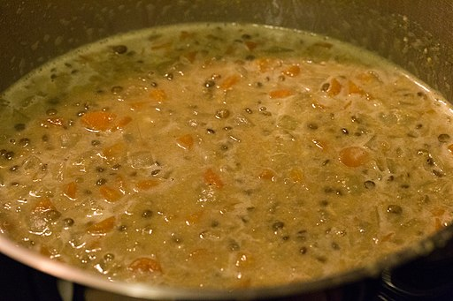

Lentils, but more wet

lentil soup--does it contain lentils? what kind of lentils does it contain? let's find out!
What you'll need:
- my god it's full of lentils
- chicken stock, chicken stock, chicken stock
- salt
- a mild onion
- a carrot
- some butter
- spices
What you gotta do:
- Cut up the veggies
- Melt the butter and through the veg in, like, aggressively
- Toss in spices. It's about to get fragrant in here, y'all
- Cascade lentils into the good smelling stuff
- Stir 'em up
- Pour the stock now, y'all
- Heat the stock
- S.A.L.T.*
- Let them absorb stock
- Put some steamed rice in a bowl (you steamed the rice didn't you? keep up.)
- Slap on dollop of full fat greek yogurt
- Fairy dust it with some fresh parsley
Back to Main Page